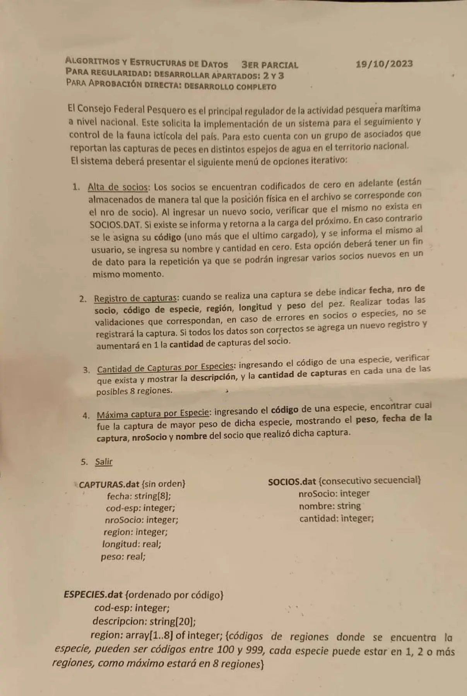

3° parcial, 19/10/2023 (Pesquero)
3° parcial y final, 19/10/2023
Enunciado


Propuesta de respuesta
Respuesta no verificada. La propuso Luta Studios con inteligencia artificial y ningún docente la revisó. Puede tener errores.
La hoja no nombra la forma de entrega. Va en Chapin, como piden las otras hojas de la materia. Va un diagrama por módulo, con su declaración de variables arriba, y primero el del programa principal. Si un diagrama no entra en la pantalla, tocalo para verlo completo. Después de los diagramas está el mismo algoritmo en Python, para que lo puedas probar. Las sentencias de archivos van con las palabras reservadas de Python (open, pickle.load, pickle.dump, seek, tell). Los textos se completan con ljust para que los registros midan lo mismo. El tamaño de un registro sale de tell() después de leer el primero.
Menú iterativo
Búsquedas
1. Alta de socios
2. Registro de capturas
3. Cantidad de capturas por especies
4. Máxima captura por especie
El mismo algoritmo en Python
Es el programa que se probó, con las mismas sentencias y en el mismo orden que las cajas. Cada Leer del diagrama es un input, convertido a int o float según la declaración, y cada Mostrar es un print.
import os
import pickle
class Socio:
def __init__(self):
self.nroSocio = 0
self.nombre = ""
self.cantidad = 0
class Captura:
def __init__(self):
self.fecha = ""
self.codEsp = 0
self.nroSocio = 0
self.region = 0
self.longitud = 0.0
self.peso = 0.0
class Especie:
def __init__(self):
self.codEsp = 0
self.descripcion = ""
self.region = [0]*8
# afSocios, afCapturas, afEspecies: str
# alSocios, alCapturas, alEspecies: archivo
# tamEsp: int
afSocios = "SOCIOS.dat"
afCapturas = "CAPTURAS.dat"
afEspecies = "ESPECIES.dat"
alSocios = open(afSocios, "r+b")
alCapturas = open(afCapturas, "r+b")
alEspecies = open(afEspecies, "rb")
pickle.load(alEspecies)
tamEsp = alEspecies.tell()
def TAM_SOCIO():
# t: int
alSocios.seek(0, 0)
pickle.load(alSocios)
t = alSocios.tell()
return t
def CANT_SOCIOS():
# cant: int
if os.path.getsize(afSocios) == 0:
cant = 0
else:
cant = os.path.getsize(afSocios) // TAM_SOCIO()
return cant
def BUSCA_NOMBRE(nom):
# Secuencial por nombre
# nom: str
# tam: int
# esta: bool
# reg: Socio
tam = os.path.getsize(afSocios)
esta = False
alSocios.seek(0, 0)
while alSocios.tell() < tam and not esta:
reg = pickle.load(alSocios)
if reg.nombre == nom:
esta = True
return esta
def BUSCA_ESPECIE(cod):
# Dicotómica: ESPECIES.dat está ordenado por código. Devuelve el nro de registro o -1
# cod, inicio, fin, medio, pos: int
# reg: Especie
inicio = 0
fin = os.path.getsize(afEspecies) // tamEsp - 1
pos = -1
while inicio <= fin and pos == -1:
medio = (inicio + fin) // 2
alEspecies.seek(medio * tamEsp, 0)
reg = pickle.load(alEspecies)
if reg.codEsp == cod:
pos = medio
elif cod < reg.codEsp:
fin = medio - 1
else:
inicio = medio + 1
return pos
def LEER_ESPECIE(pos):
# pos: int
alEspecies.seek(pos * tamEsp, 0)
return pickle.load(alEspecies)
def ALTA_SOCIOS():
# nom: str
# reg: Socio
# Fin de datos: nombre "*"
nom = input("Nombre del socio (* para terminar): ")
while nom != "*":
nom = nom.ljust(30, " ")
if BUSCA_NOMBRE(nom):
print("Ese socio ya existe")
else:
reg = Socio()
reg.nroSocio = CANT_SOCIOS()
reg.nombre = nom
reg.cantidad = 0
alSocios.seek(0, 2)
pickle.dump(reg, alSocios)
alSocios.flush()
print("Su número de socio es", reg.nroSocio)
nom = input("Nombre del socio (* para terminar): ")
def EN_REGION(esp, r):
# esp: Especie
# r, i: int
# esta: bool
esta = False
for i in range(8):
if esp.region[i] == r:
esta = True
return esta
def REGISTRO_CAPTURA():
# posEsp: int
# cap: Captura
# soc: Socio
# esp: Especie
cap = Captura()
cap.fecha = input("Fecha (dd/mm/aa): ").ljust(8, " ")
cap.nroSocio = int(input("Nro de socio: "))
cap.codEsp = int(input("Código de especie: "))
cap.region = int(input("Región (100 a 999): "))
cap.longitud = float(input("Longitud: "))
cap.peso = float(input("Peso: "))
posEsp = BUSCA_ESPECIE(cap.codEsp)
if cap.nroSocio < 0 or cap.nroSocio >= CANT_SOCIOS():
print("No existe ese socio. No se registra la captura")
elif posEsp == -1:
print("No existe esa especie. No se registra la captura")
else:
esp = LEER_ESPECIE(posEsp)
if not EN_REGION(esp, cap.region) or cap.longitud <= 0 or cap.peso <= 0:
print("Datos inválidos. No se registra la captura")
else:
alCapturas.seek(0, 2)
pickle.dump(cap, alCapturas)
alCapturas.flush()
alSocios.seek(cap.nroSocio * TAM_SOCIO(), 0)
soc = pickle.load(alSocios)
soc.cantidad = soc.cantidad + 1
alSocios.seek(cap.nroSocio * TAM_SOCIO(), 0)
pickle.dump(soc, alSocios)
alSocios.flush()
def POR_REGIONES():
# cont: arreglo [0..7] de int
# cod, pos, tam, i: int
# esp: Especie
# cap: Captura
cont = [0]*8
cod = int(input("Código de especie: "))
pos = BUSCA_ESPECIE(cod)
while pos == -1:
cod = int(input("No existe, ingrese otro código: "))
pos = BUSCA_ESPECIE(cod)
esp = LEER_ESPECIE(pos)
tam = os.path.getsize(afCapturas)
alCapturas.seek(0, 0)
while alCapturas.tell() < tam:
cap = pickle.load(alCapturas)
if cap.codEsp == cod:
for i in range(8):
if esp.region[i] == cap.region:
cont[i] = cont[i] + 1
print(esp.descripcion)
for i in range(8):
if esp.region[i] != 0:
print("Región", esp.region[i], ":", cont[i])
def MAXIMA_CAPTURA():
# cod, tam: int
# hay: bool
# cap, maxCap: Captura
# soc: Socio
cod = int(input("Código de especie: "))
while BUSCA_ESPECIE(cod) == -1:
cod = int(input("No existe, ingrese otro código: "))
hay = False
tam = os.path.getsize(afCapturas)
alCapturas.seek(0, 0)
while alCapturas.tell() < tam:
cap = pickle.load(alCapturas)
if cap.codEsp == cod and (not hay or cap.peso > maxCap.peso):
maxCap = cap
hay = True
if not hay:
print("No hay capturas de esa especie")
else:
alSocios.seek(maxCap.nroSocio * TAM_SOCIO(), 0)
soc = pickle.load(alSocios)
print(maxCap.peso, maxCap.fecha, maxCap.nroSocio, soc.nombre)
# Programa principal
# opcion: int
opcion = 0
while opcion != 5:
print("1. Alta de socios")
print("2. Registro de capturas")
print("3. Cantidad de capturas por especies")
print("4. Máxima captura por especie")
print("5. Salir")
opcion = int(input("Opción: "))
while opcion < 1 or opcion > 5:
opcion = int(input("Opción inválida: "))
match opcion:
case 1:
ALTA_SOCIOS()
case 2:
REGISTRO_CAPTURA()
case 3:
POR_REGIONES()
case 4:
MAXIMA_CAPTURA()
alSocios.close()
alCapturas.close()
alEspecies.close()Respuesta no verificada. Puede tener errores.
Se armó con la hoja del examen y la página del 3° parcial y final (registros como clase, recorrer, búsquedas, actualizar un registro y alta). Las operaciones de archivos siguen las diapositivas de merge y corte de control. El Chapin sigue la forma de las diapositivas del examen de Historia Clínica de 2019. SOCIOS.dat se lee por posición relativa, como dice la hoja.
Quedó en duda: Al dar de alta, el socio se busca por nombre, porque es el único dato que se ingresa. El número del socio nuevo es la cantidad de socios, porque arrancan en 0 y la posición es el número. La región se valida contra las regiones de la especie, y así también queda entre 100 y 999. Un 0 en el arreglo de regiones se toma como lugar vacío. El nombre del socio se completa a 30 caracteres, porque la hoja no da el largo. Si dos capturas tienen el mismo peso máximo, sale la primera. En Python, pickle graba un entero menor que 256 en menos bytes que uno más grande. Por eso desde el socio 256, o cuando la cantidad de un socio pasa de 255, los socios dejan de medir lo mismo. Con las especies pasa igual si las regiones menores y mayores que 256 no se reparten igual en todas. Entonces el registro deja de coincidir con la posición que calcula el programa. El material pide registros del mismo tamaño y solo muestra cómo lograrlo con textos (ljust). Las pruebas se hicieron con datos que no cambian el tamaño. Las diapositivas de la materia no muestran en Chapin la lectura de datos ni la selección múltiple. Acá van como Leer y como Según, con una columna por caso.
¿Cómo te fue?
Marcá cada tema del examen.
- ArchivosSecuencial y de acceso directo, en 3° parcial y final
- Posición relativaCómo viene el examen, en 3° parcial y final
- MáximoContadores, acumuladores y máximos, en 1° parcial